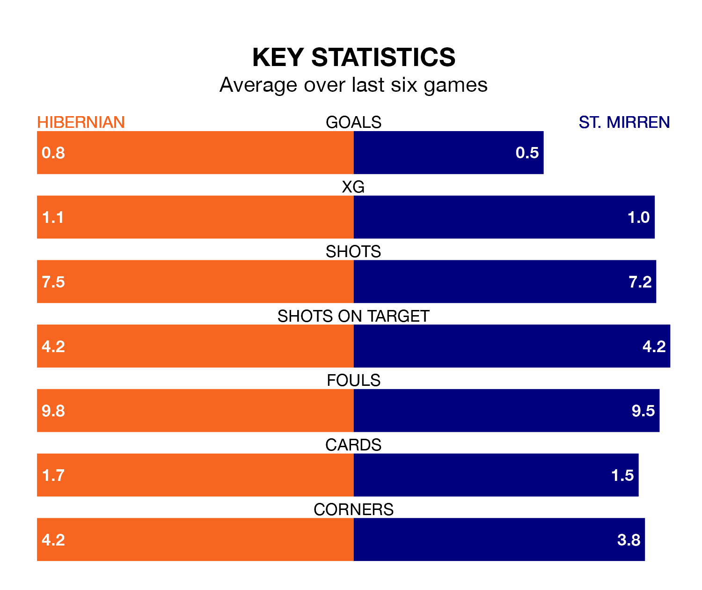

Hibernian face St. Mirren at the Easter Road Stadium on Saturday looking to secure a first win in six Premiership games.
Hibs have lost three and drawn two matches since they last earned three points – against Livingston on December 9.
They face a St. Mirren side who have won just one and lost four over that time.
In the last 10 years, Hibernian and St. Mirren have played each other on 30 occasions. Hibernian won 16 of them, St. Mirren six, and they drew eight times.
On average, Hibs scored 1.7 goals and the Buddies 1.1 in those matches.
Their last meeting was on November 8, when they played out a 2-2 draw.
With 24 goals in 23 games so far this season, St. Mirren are scoring at below the league average rate with 1.0 goals per game. And they are conceding at an average rate, letting in 29 goals at a rate of 1.3 per game.
Hibernian, meanwhile, are average scorers, with 1.3 goals per game. They have conceded 1.5 goals per game.
With David Marshall between the sticks, Hibs can rely on one of the league's safest pair of hands. He has kept seven clean sheets in his 21 appearances this season in Premiership.
In the Buddies's net, Zachary Hemming also has seven clean sheets in 23 games.
The away side are fifth in the table after 23 games, of which they have won eight and drawn five, earning 29 points.
The hosts are two places behind St. Mirren in seventh, with six wins and eight draws putting them on 26 points.
Hibernian's last match was on January 27, a 2-2 draw against Kilmarnock, with Joe Newell and Myziane Maolida getting the goals for Hibs.
St. Mirren lost 1-0 against Rangers last time out, also on January 27.
Saturday's match will be refereed by William Collum, who has taken charge of 11 Premiership games so far this season, issuing one red card and booking 31 players. He has awarded three penalties.
The last Hibernian game Collum refereed was a 2-0 home win against Aberdeen on December 3. His last St. Mirren match was their 1-0 loss away at Ross County on November 28.
Updated: 15:45 (UTC), 02/02/24